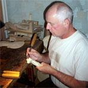
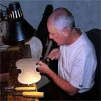
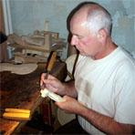
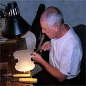

O mnie
Urodziłem się w Nowym Sączu. Sztuki lutniczej uczyłem się w Technikum Budowy Instrumentów Lutniczych w Nowym Targu. Do Lubina przyjechałem do pracy, w jedynej w Polsce Fabryce Instrumentów Lutniczych. Jednak praca w fabryce nie dawała mi satysfakcji. Po przedstawieniu w Związku Polskich Artystów Lutników w Warszawie wykonanych przeze mnie instrumentów, zostałem przyjęty w 1981 roku w poczet jego członków.
W 2014 roku zdobyłem II nagrodę w V Ogólnopolskim Konkursie Lutniczym im. Włodzimierza Kamińskiego w kategorii skrzypiec 4/4.
Jestem członkiem komisji kwalifikacyjnej ZPAL. Stale współpracuję z wybitnymi lutnikami francuskimi - m.in. w Paryżu. Biorę udział w naprawach i korektach instrumentów najwybitniejszych lutników w światowej historii. W ten sposób mam możliwość poznawania tajemnic sztuki lutniczej od jej wnętrza, co wykorzystuję we własnej praktyce tworząc skrzypce, altówki i wiolonczele o coraz szlachetniejszym brzmieniu. Posiadana przeze mnie umiejętność gry na skrzypcach stwarza mi możliwość własnej oceny ich brzmienia.
 


